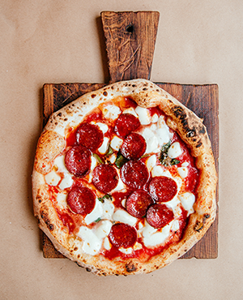

Favorite Fast Food
Click the button below to learn about your favorite fast food
You Chose Pizza
Pizza is a savory dish of Italian origin consisting of a usually round, flattened base of leavened wheat-based dough topped with tomatoes, cheese, and often various other ingredients, which is then baked at a high temperature, traditionally in a wood-fired oven.
You Chose Hamburger

A hamburger is an American/German sandwich consisting of one or more cooked patties of ground meat, usually beef, placed inside a sliced bread roll or bun. The patty may be pan fried, grilled, smoked or flame broiled.
You Chose Hot Dog

A hot dog is an American food consisting of a grilled or steamed sausage served in the slit of a partially sliced bun. It can also refer to the sausage itself. The sausage used is a wiener or a frankfurter.